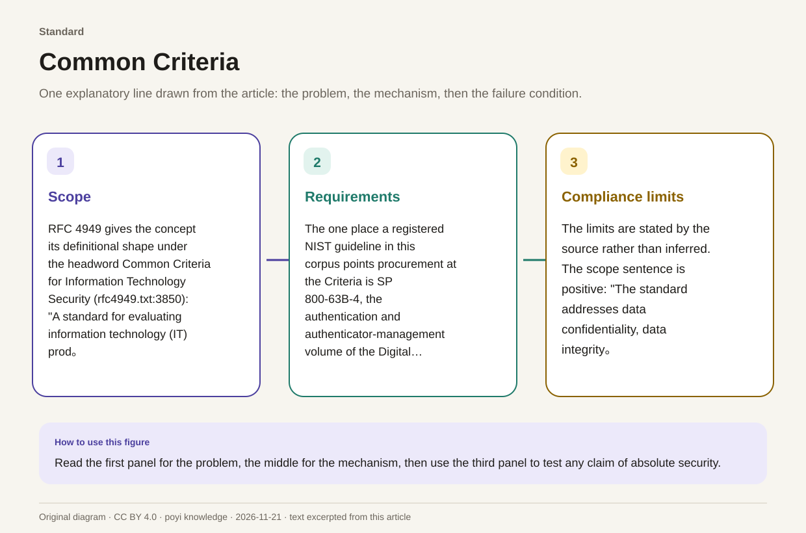
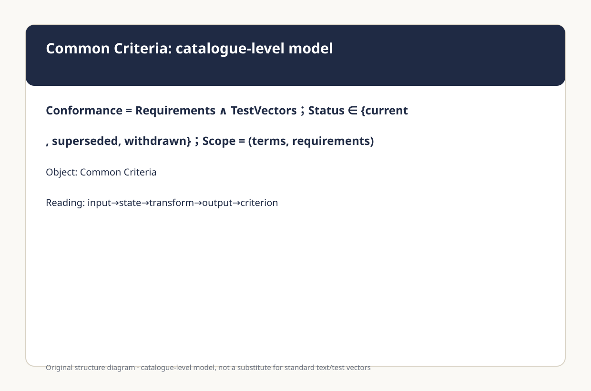

Principles
Standard: Common Criteria (通用评估准则). RFC 4949 gives the concept its definitional shape under the headword Common Criteria for Information Technology Security (rfc4949.txt:3850): "A standard for evaluating information technology (IT) products and systems. It states requirements for security functions and for assurance measures." The two axes named there - security functions, and assurance measures - are what the parts split up. Part 1 is described as defining the general concepts and principles of IT security evaluation (3890-3895) and Part 2 as containing the catalog of functional requirement statements (3897-3900); only the Part 3 run is marked here, because every longer run in this file crosses a 72-column wrap and would carry the continuation indents inside the quotation: "Part 3, Security Assurance Requirements, contains a catalog of assurance components for use as a standard way of expressing such requirements for IT products and systems, and defines evaluation criteria for protection profiles and security targets." (3902-3905). The objects the machinery moves are defined as terms of art. The thing being evaluated is the target of evaluation: "An information technology product or system that is the subject of a security evaluation, together with the product's associated administrator and user documentation." (16833-16835). The claims about it are written either by consumers, in a protection profile (13267-13280), or by the vendor, in a security target (15424-15437). The confidence scale is the evaluated assurance level: "The Common Criteria defines a scale of seven, hierarchically ordered EALs for rating a TOE." (6895-6897), and the seven levels run from "EAL1. Functionally tested." at the bottom (6904) up to a formally verified design and tested at the top (6898). Note what this principle claim is not: no registered retained text in this corpus is the ISO/IEC 15408 document itself, so nothing here quotes the Criteria's own requirement numbering, and the structure above is the glossary's description of it.

Why it matters
Why an evaluation standard of this shape exists is answered by what an assessment can and cannot establish about a component. SP 800-53A Revision 5 states the thing being judged: "The security or privacy strength of a system component (i.e., hardware, software, or firmware) is determined by the degree to which the security or privacy functionality implemented within that component is correct, complete, resistant to direct attacks (strength of mechanism), and resistant to bypass or tampering." (sp800-53a_r5.txt:496). That sentence is the rationale for the split RFC 4949 describes - correctness, completeness and resistance to direct attack or to bypass are properties of how an implemented function holds up, which is a different question from which functions to require. The same footnote then names the venue where that question is answered for components: "Common Criteria Testing Laboratories test and evaluate information technology products using [ISO 15408]." (497), alongside the laboratories that do the cloud and cryptographic-module work. The third design motive the retained text shows is reuse: an assessment may begin by "Obtaining previous assessment results that may be appropriately reused for the current assessment" (e.g. ... [ISO 15408] evaluations) (976) - reuse of prior evaluation results is listed as a legitimate input, which is only possible if the results are written against a reusable, implementation-independent statement of requirements. The standard's own self-description is visible in the catalogue entry this document cites: "Evaluation criteria for IT security" "Part 1: Introduction and general model." (47002) - the ISO title runs through its own dash separators, which this extraction prints as mojibake, so only the ASCII segment between them is quoted.
Applications
The one place a registered NIST guideline in this corpus points procurement at the Criteria is SP 800-63B-4, the authentication and authenticator-management volume of the Digital Identity Guidelines, in a paragraph about non-software authenticators that must not be able to export their secret (sp800-63b.txt:2288-2290). It states the recommendation this way: "Organizations SHOULD employ authenticators that have undergone independent security testing" and then gives the two acceptable routes: "such as authenticators validated to [FIPS140] security level 2 overall with level 3 physical security6 or evaluated against relevant Common Criteria Protection Profiles." (2291-2294). Two things should be read off that sentence carefully. First, it is a SHOULD, an instruction to organisations about which authenticators to prefer, not a rule that a product must hold a certificate. Second, it points at protection profiles rather than at an EAL: the instrument named is the profile, the implementation-independent statement of requirements for a category of products that RFC 4949 defines at rfc4949.txt:13267-13280 and describes as the consumer-side document at 13282-13285. Note too that the retained text prints the footnote marker fused onto the word in physical security6; the run is quoted exactly as printed, not tidied. The wider machinery is described but not asserted here: RFC 4949 defines a commercially licensed evaluation facility as an organisation with official approval to evaluate products under the Common Criteria (rfc4949.txt:3833-3835) and records that NIAP develops protection profiles and test sets and works on an international mutual recognition scheme (10983-10998); those lines are pointers, and the marks in this claim belong to its own source.

Limits & attacks
The limits are stated by the source rather than inferred. The scope sentence is positive: "The standard addresses data confidentiality, data integrity, and availability and may apply to other aspects of security." (rfc4949.txt:3877-3878). The exclusions are then printed as a list, and the last item is the one a cryptography catalogue should notice: "It does not apply to (a) administrative security not related directly to technical security, (b) technical physical aspects of security such as electromagnetic emanation control, (c) evaluation methodology or administrative and legal framework under which the criteria may be applied, (d) procedures for use of evaluation results, or (e) assessment of inherent qualities of cryptographic algorithms." (3882-3888). A product evaluated under the Criteria has therefore had its implemented mechanisms assessed for correctness, completeness and resistance; the assessment of the algorithms themselves is outside the standard's stated remit - which is why this row carries no claim about any cipher being vetted by an EAL. Second, the scale does not transfer cleanly across criteria families: of the equivalence between EALs and the older TCSEC letters the glossary says "However, this equivalency should be used with caution. The levels do not derive assurance in the same manner, and exact mappings do not exist." (6918-6920). Third, the baseline is the vendor's own document: "Common Criteria philosophy, it is important that a TOE be evaluated against the specific set of criteria expressed in the target." (16841-16843), with the target itself being checked for being correct, complete and internally consistent (16846-16848) - an evaluation certifies conformance to a stated target, and the space for a weak target is exactly where this boundary lies. None of this is an account of the Criteria being broken: the retained texts describe no attack on an evaluated product, and no such claim is made here. What they do state is the 1993 motivation to consolidate earlier criteria (3856-3860), which is history, and the exclusions above, which are limits.
History
The retained dates are few and specific. "Canada, France, Germany, the Netherlands, the United Kingdom, and the United States (NIST and NSA) began developing this standard in 1993, based on the European ITSEC, the Canadian Trusted Computer Product Evaluation Criteria (CTCPEC)" (rfc4949.txt:3856-3860): five European parties plus the United States through NIST and NSA, starting in 1993, on the base of ITSEC, CTCPEC and the U.S. Federal Criteria with the TCSEC as precursor - the mark stops before the Federal Criteria title because the glossary encloses that title in its own quotation marks, so quoting it would put quote characters inside a mark. Work was done in cooperation with "ISO/IEC Joint Technical Committee 1 (Information Technology)," (3862), and its Subcommittee 27, Working Group 3 is named at 3871. The ISO step: "Version 2.0 of the Criteria has been issued as ISO's International Standard 15408." (3872-3873), and the intent that went with it: "The U.S. Government intends this standard to supersede both the TCSEC and FIPS PUB 140." (3873-3874). The predecessor's own entry records the same outcome in three words - the ITSEC entry ends "Superseded by the Common Criteria." (8564). The version the glossary cites is dated in its bibliography: the [CCIB] entry names the Common Criteria Implementation Board, Part 1 Introduction and General Model, version 2.0, CCIB-98-026, and "May 1998." (19283-19286). The source's own date belongs in the record too: RFC 4949 prints Request for Comments: 4949 and August 2007 at lines 7-8, and the Common Criteria text it describes is therefore the mid-1990s-to-2007 picture, not the current one. Later editions are outside this retained text except as a pointer: SP 800-53A Revision 5 cites the ISO catalogue entry for Part 1: Introduction and general model. dated 2009 (sp800-53a_r5.txt:47002), cited here by line because this claim's source is the RFC. Two further things the retained text does not give are deliberately absent from this entry: any list of recognised schemes or mutual-recognition signatories beyond the NIAP bullet at rfc4949.txt:10997-10998, and any statement of how many products have been evaluated.
Worked example & verification
Formal model and reproduction steps
[S=\min_i S_i,\quad S_i\in{\text{密钥强度},\text{分组安全},\text{实现安全}}]
Common Criteria: the registered public parameters, key material or randomness, and message are mapped through the stated transformation to an output checked against the registered criterion. The worked example is a structural reproduction, not a new test vector; parameter ranges, standard versions and implementation details remain source-bound.
References
- Wikipedia search entry for 通用评估准则. https://zh.wikipedia.org/w/index.php?search=%E9%80%9A%E7%94%A8%E8%AF%84%E4%BC%B0%E5%87%86%E5%88%99
- Handbook of Applied Cryptography (Menezes, van Oorschot, Vanstone). https://www.cacr.math.uwaterloo.ca/hac/